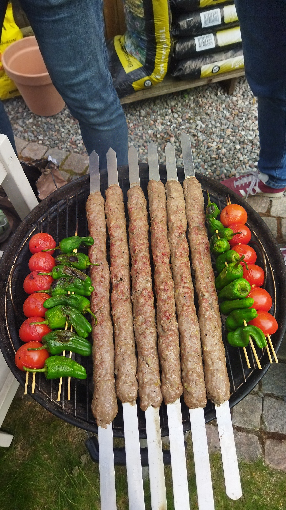
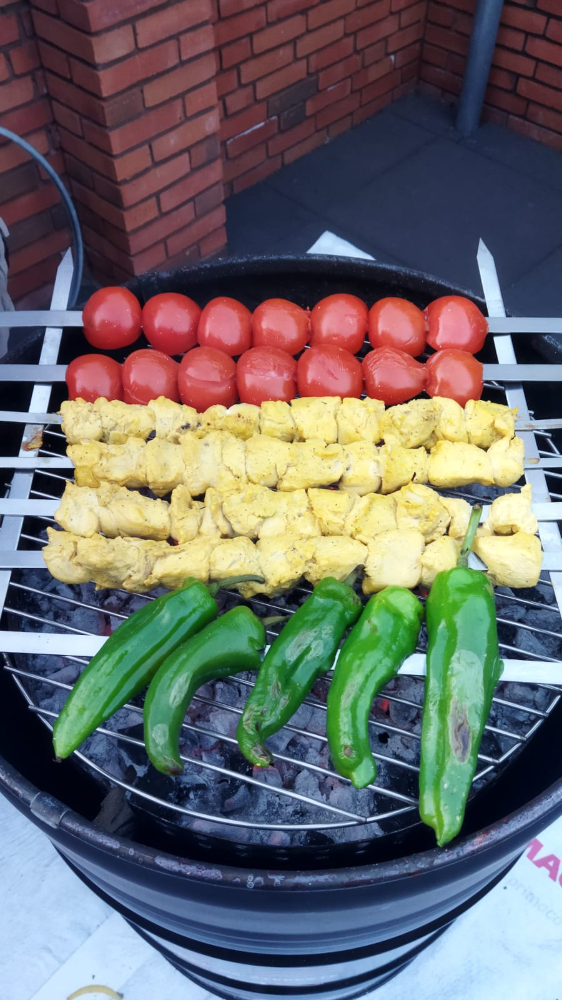
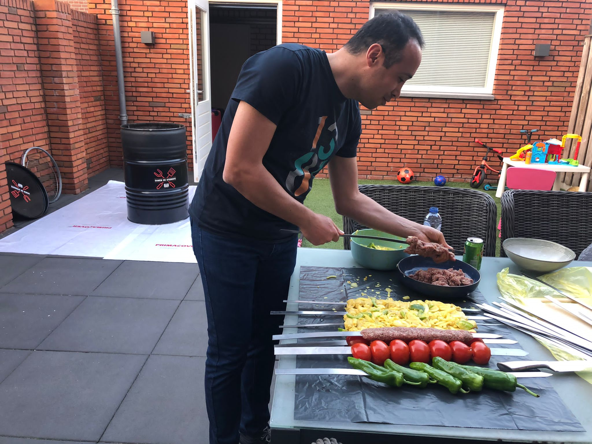
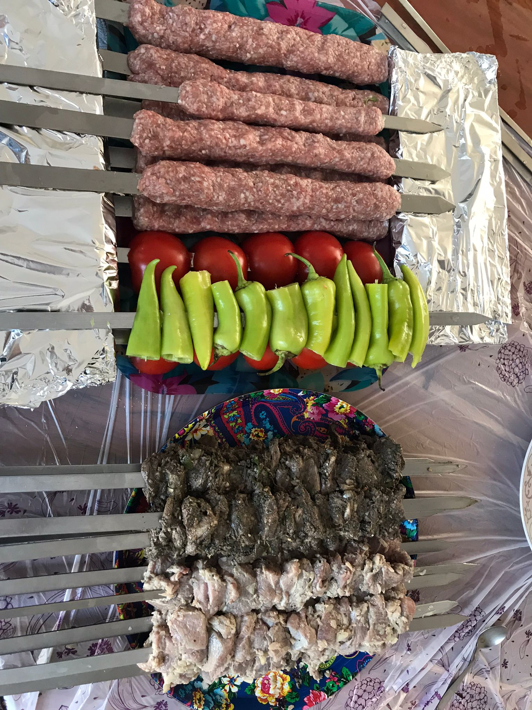
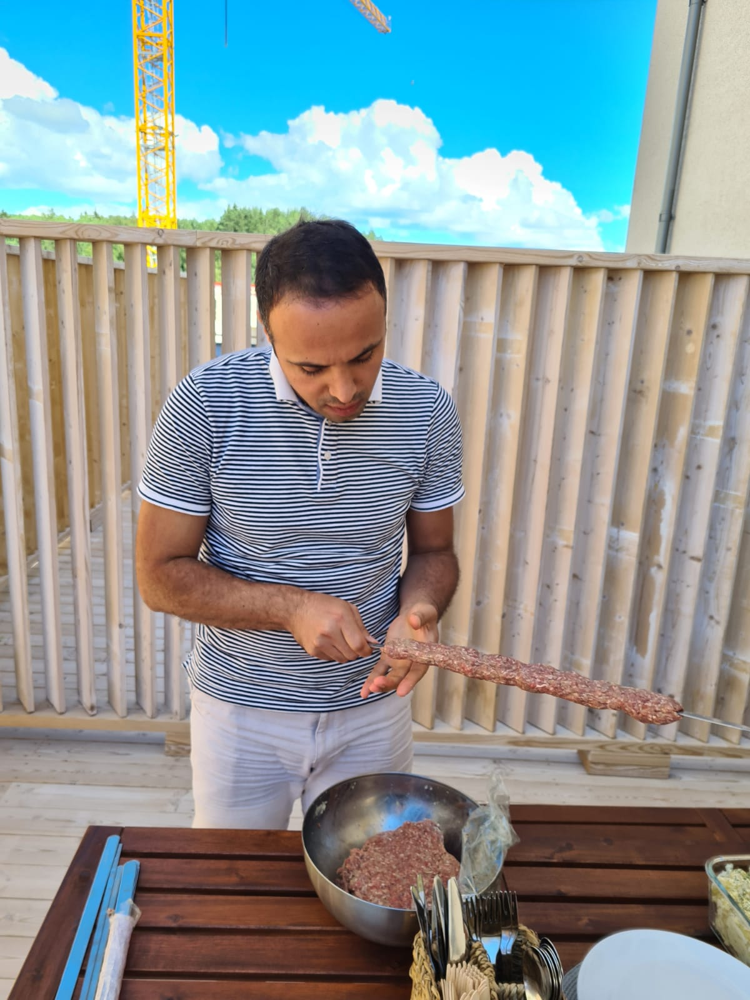
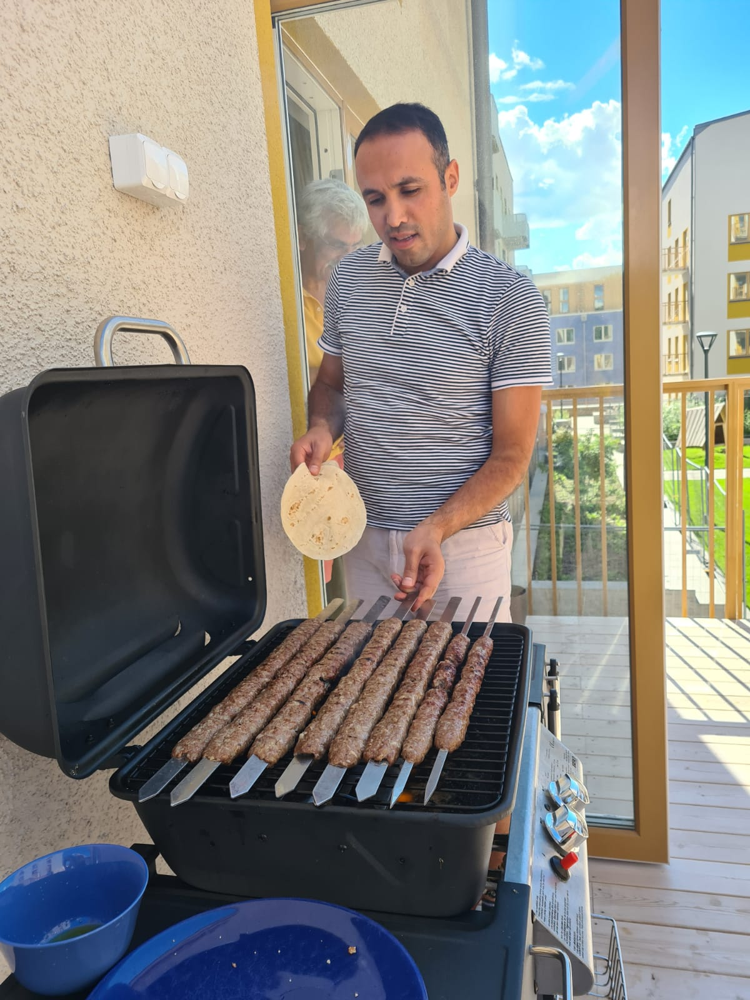
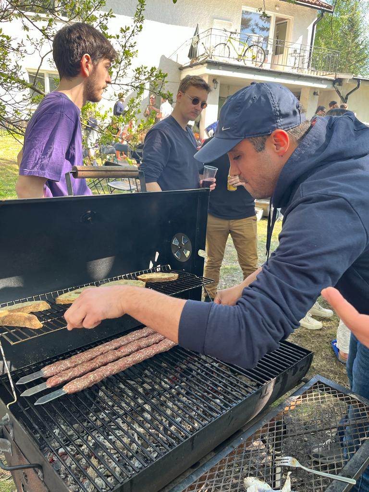
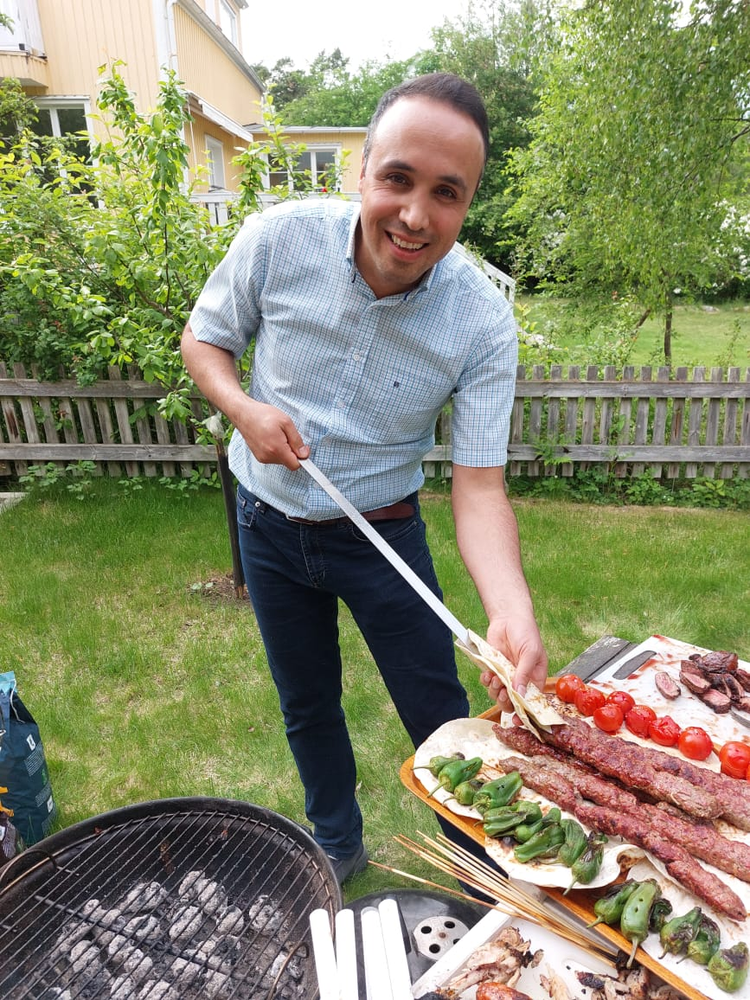

Kabab Koobideh
Minced beef/lamb with grated onion, saffron, and simple seasoning.
Family favourites from Iran — especially the tangy, herby Kabab Torsh of the north.
Koobideh, Joojeh, and Chenjeh are staples at home, but our signature is Kabab Torsh — marinated with pomegranate, walnuts, and herbs.

Minced beef/lamb with grated onion, saffron, and simple seasoning.

Saffron‑yoghurt chicken — tender and smoky.

Marinated lamb sirloin cubes, grilled hot and fast.

Beef/lamb in a tangy walnut–pomegranate–herb marinade.

Koobideh technique and skewering.

Spice profiles & regional twists.

Clear walkthrough for beginners.

Ingredient ratios & tips.